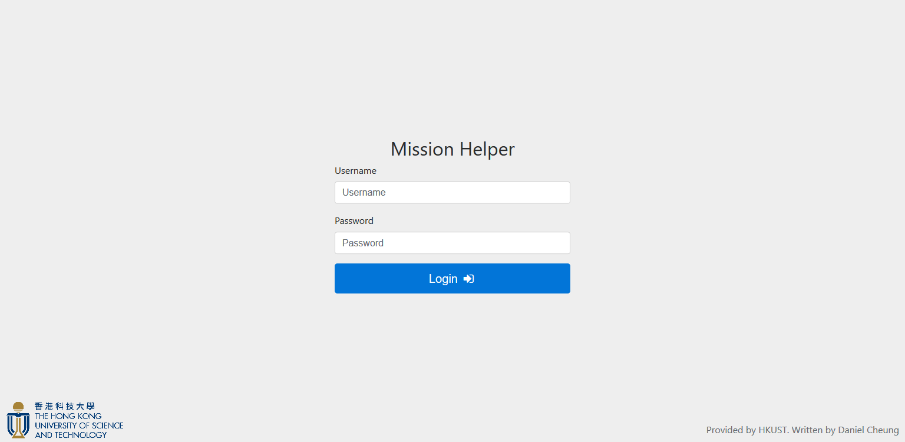

Past Works
React pdfmake Reconciler (2023)
A small project I made over a week of a custom React renderer rendering to the pdfmake input descriptor using react-reconciler, for producing PDFs.
Author: Daniel Cheung
Technologies
- React
- TypeScript
- react-reconciler
- pdfmake
- Docusaurus for documentation site
Links
Photosynthesis (2020-2022)
Fun project coded with a friend, where I provided 3D assets modeled and textured in Blender, and staged in Three.js using the ECS pattern and React.
Authors: Dipsy Wong, Daniel Cheung
Play here: Photosynthesis
Photosynthesis is a fun board game we discovered in 2020. However, playing it requires meticulous observation counting points for each trees with the sun at each of the 6 directions. This was just enough push for us to feel the challenge to automate the process, (though some might say counting and doing maths is part of the fun playing board games. We disagree). We went ahead and programmed a clone of the game with complete custom-made assets in Inkscape and Blender.
I took the opportunity to learn Entity-Component-System architecture pattern (ECS) during the project, and it turned out to be a great example where using ECS would make programming easier.
Technologies
- React, TypeScript for frontend UI
- Entity-Component-System architecture pattern (ECS) for render loop using ecsy.js
- Three.js for WebGL rendering
- Peer.js (WebRTC) and TURN server for P2P connection
- Blender for 3D modeling and texturing
Images


Links
ZINC - HKUST Best Final Year Project (2020)
Automatic grading platform for programming assignments. The name is an acronym for "ZINC Is Not CASS", where CASS was the homework submission system of the Computer Science & Engineering department of the HKUST.
Authors:
Bryan Chun,
Daniel Cheung,
David Mak,
Dipsy Wong
Advisor:
Dr. Desmond TSOI
The Docker-powered platform handles:
- Students, TAs account synchronization
- Assignment upload
- Assignment auto-grading
- Report generation
- Report-viewing
Awards & Achievements
- Best FYP
- Best FYP Video
- Finalist in HKUST President's Cup
The scope of the platform is comparable to the more popular Submitty, although our software has only been developed in under a year, one of our distinctive features is the containerization of assignment grading, and our pipeline grading philosophy. Our platform also specifically target the use cases for the people of HKUST as the initial effort to gain use base.
ZINC is still actively being used within HKUST, with maintenance and development efforts put forth to expand the feature set.
Technologies
- React, Next.js, TypeScript for frontend UI
- PHP Laravel for REST API
- Docker for deployment and docker-in-docker for assignment auto-grading
- Redis for caching and IPC messaging
- Postgres DB for persistent data storage
- Kotlin for auto-grading logic
Best FYP Video
Presentation
Posters Submitted for HKUST President's Cup


Final Report
HKUST Robotics Team - Robot Design Contest 2018 - Scoreboard (2018)
This system has been designed with broadcasting in mind, for the competition is produced in a show format by the school's media team.
UI
The visual elements must be eye-catching. Suitable amount of animation is added to the various UIs.

Technologies
- Firebase for database.
- Vue for frontend.
Links
https://github.com/dipsywong98/ScoreBoard/. The repo contains live demo.
HKUST Robotics Team - Robot Design Contest 2018 - Marketplace (2018)
Every year, the HKUST Robotics Team holds the Robot Design Contest for its new recruits. To build robots for the competition, they need to purchase with provided credits more expensive parts. In previous years, paper forms were used for record, however, it was unreliable since multiple people may hand in form to purchase some last remaining products.
An internal site was thus created to ease this process.
UI

Technology
- LAMP
- PHP Laravel for backend
- Vue and Bootstrap for frontend
In terms of security, it has been delegated to the school's provided CAS system.
HKUST Robotics Team - Robot Design Contest 2018 - Gamemaster (2018)
I was one of 3 people in charge of the Robot Design Contest 2018, from game rule making, to event organization.
The entire recruitment process consists of the following processes:
- Recruitment workshops
- Basics training tutorials in software/hardware/mechanical
- Robot Design Contest
- Sub-team selection interviews
Rule Book
HKUST Robotics Team - 2017 Recruitment Poster (2017)
The finished product uses the Red in the Robotics Team logo as a start, with the palette consisting of colors around this hue. Small components occupy the top slanted trapezium, consisting of aspects from software, electronics and mechanical. Silhouettes of three robots from the three sub-teams are placed on the right, representing the Robotics Team as a whole.
HKUST Underwater Robot Competition NFC Credit System

Technologies
- C#
- NFC
Links
ROV Mission Helper (2017)
The ROV Mission Helper was developed for The IET/MATE Hong Kong Underwater Robot Challenge 2017. It is a score keeping system designed specifically for the 15-min competition trial run, to replace pen and paper for calculating final rankings in previous years. Additionally, a detailed copy of the scores summary is emailed to the playing team after their trial.
UI
The UI is designed responsively to be used best on a tablet for its spaciousness and works well even on a phone.



Technologies
- LAMP
- Mustache for templating
- jQuery, Bootstrap for front-end
Different score sheets are described in JSON format, (including the above vetting and trial sheets). They are then loaded by the server and a new MySQL table is created for each score sheet. And they are displayed in a list in the welcome screen.
MATE ROV 2017 All-Rounded Winner - HKUST Epoxsea Beluga (2017)
I was in the HKUST Robotics Team ROV subteam in 2017. For the design aspect, I designed the color and typography style guides for the technical documentation.
Procal - Programmable Android Calculator (2016)
This app was made for the HKUST Mobile App Design Contest in 2016 by a team of 4. The concept was to make a CASIO-FX50 program compatible calculator app. The team is as follows:
- Daniel Cheung: https://github.com/danvim
- Peter Tse: https://github.com/mcreng
- Dipsy Wong: https://github.com/DipsyWong98
- Bryan Chun: https://github.com/BryanChun
Presentation
Newman Catholic College Website - Where I started (2014-2016)
This is the website of my secondary school. And where I started learning web. I developed the framework for my school website during my Form 3-6 (Grade 9-12) years. The website was like Apple's website in 1997: stuck to the top left hand corner of my LCD monitor, too many image buttons etc. It was typical of 90s to early 2000s style.
I have upgraded the once completely static web server, from requiring to edit source HTML to show updates, to a more dynamic WIMP stack. I had more plans with the site then, but it was the first time I had to learn to reconcile in design choices with my first ever "design client".

Screen shot of the original website. This is the only one I have managed to find.
The website had several requirements:
- The picture of Cardinal Newman must be very visible.
- All elements in the original homepage must be preserved.
The project did not include a complete revamp of the entire website, since the scale was too big for one person to handle. Instead, newly updated web pages would utilize the newly defined universal styles for display, and older web pages would be left as is.
Since the inclusion of database, data can be searched. New UI has been added to accommodate this.
Technologies
- WIMP
- jQuery, Bootstrap for front-end